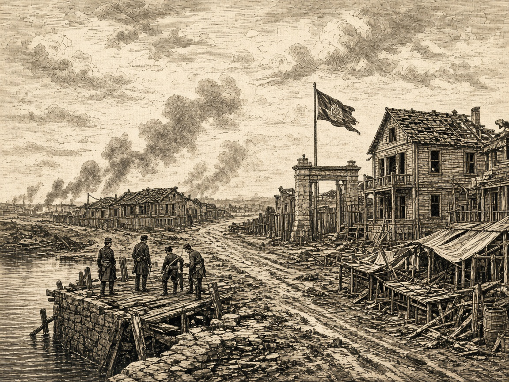
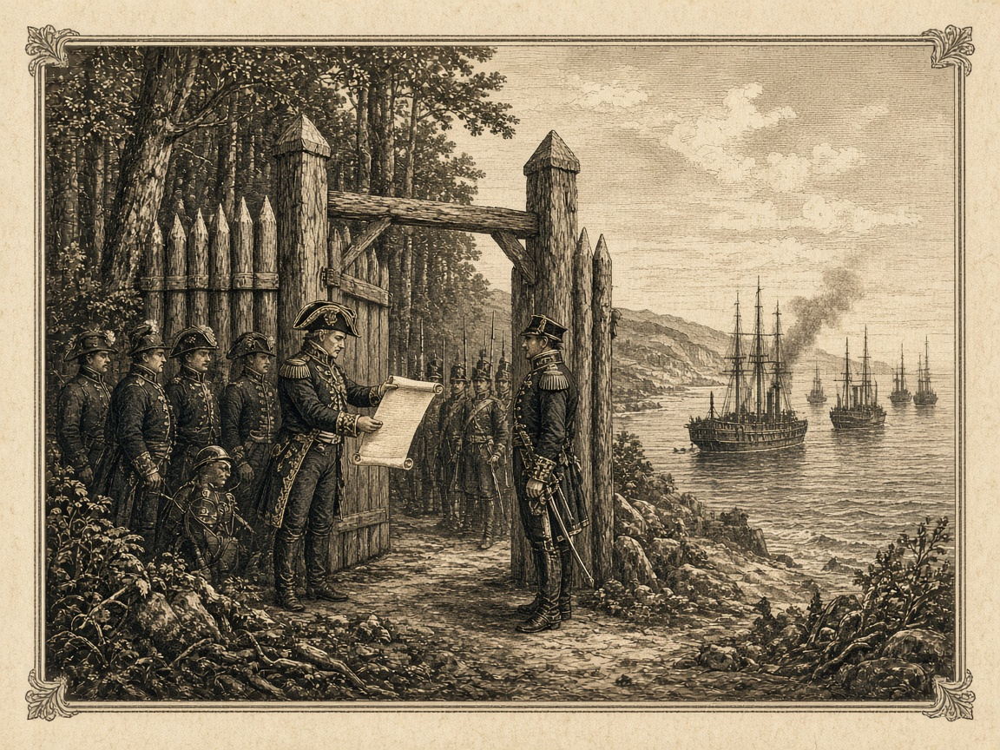

朱川の町と軍港、オラニウム領に
今期損害は朱川6,200／オラニウム500 朱川は現代都市二つを残す 黒潮は蒼森と交戦継続、停戦打診

【総合部】第203期、朱川共和国の町（68,10）と軍港（69,7）がオラニウム連邦の占領下になった。今期の公報損害は朱川六千二百人、オラニウム五百人。首都丹城をすでに失っていた共和国に残る名前付きの都は、現代都市の朱澄（69,8）と丹翠（70,9）。人口は五千二百人、領土は五区画まで細った。さらに町と軍港を失ったことで、海上輸送と沿岸の補給路も縮む。二つの現代都市をどう守るか、共和国の残存部隊は岐路に立つ。詳報は2面。

黒潮×蒼森が開戦 同じ期に停戦を打診
黒潮自治国と蒼森辺境伯領は第203期に開戦した。黒潮は（10,8）で造船と部隊配置を進める一方、同じ期に蒼森へ停戦を打診したが、蒼森との交戦は続いている。開戦直後から停戦を求めた動きと、なお続く強硬な声明の間には隔たりがある。青海共和国も蒼森に停戦を打診した。泰平天国は狐っ娘の尻尾教団へ停戦を打診し、黄砂同盟はオリョルッル王国へ申し入れている。チェス＝シロバキア共和国から泰平天国へ三万五千人の移民が到着し、泰平は快く受け入れた。火災は二十七件、人口減は十万千七百人。国特集は8面のあろあろ国。